第04讲 思想方法专题：线段与角计算中的思想方法
第04讲 思想方法专题：线段与角计算中的思想方法
(4类热点题型讲练)

目录
【考点一 分类讨论思想在线段的计算中的应用】 1
【考点二 分类讨论思想在角的计算中的应用】 6
【考点三 整体思想及从特殊到一般的思想解决线段和差问题】 12
【考点四 整体思想及从特殊到一般的思想解决角和差问题】 18
【考点一 分类讨论思想在线段的计算中的应用】
例题：（23-24七年级下·四川成都·开学考试）已知线段 ，直线
，直线 上有一点
上有一点 ，且
，且 ，
， 为
为 的中点，则
的中点，则 的长为
的长为
【变式训练】
1．（23-24七年级上·江苏徐州·期末）已知线段 ，点C在直线上，且
，点C在直线上，且 ，点D是
，点D是 的中点，则
的中点，则 ．
．
2．（23-24七年级上·北京·期末）已知 是直线上的点，线段
是直线上的点，线段 ，
， ，
， 是线段
是线段 的中点，则线段
的中点，则线段
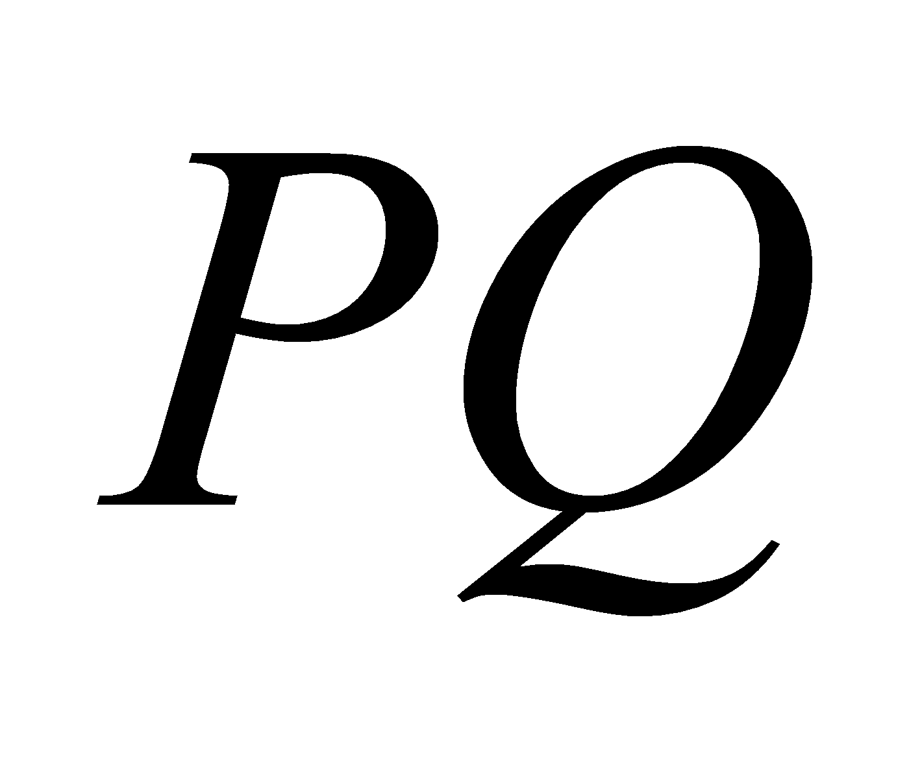
的长为 ．3．（23-24七年级下·山东日照·开学考试）已知 三点在同一直线上，线段
三点在同一直线上，线段
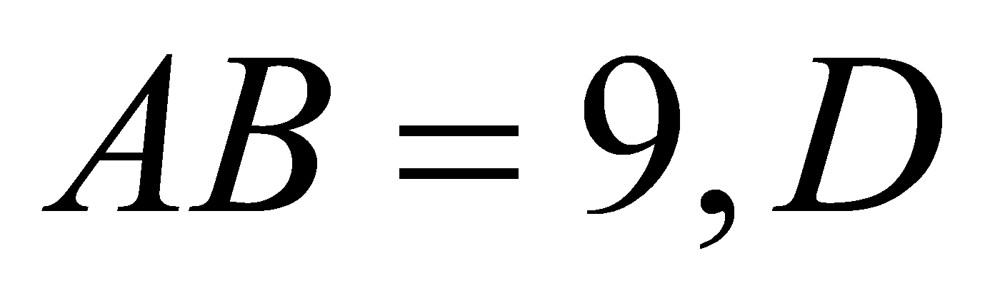
是线段的中点，且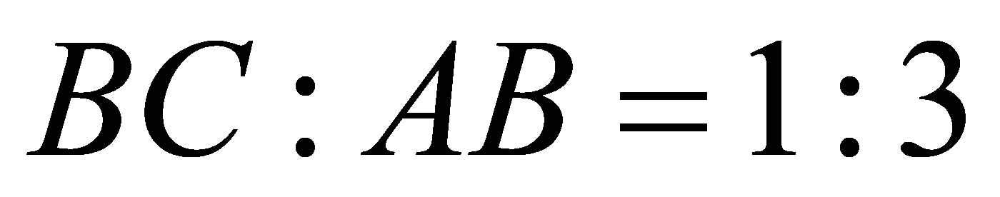
，则线段 的长等于 ．
的长等于 ．4．（23-24七年级上·广东揭阳·阶段练习）如图，有公共端点P的两条线段 ，
， 组成一条折线
组成一条折线
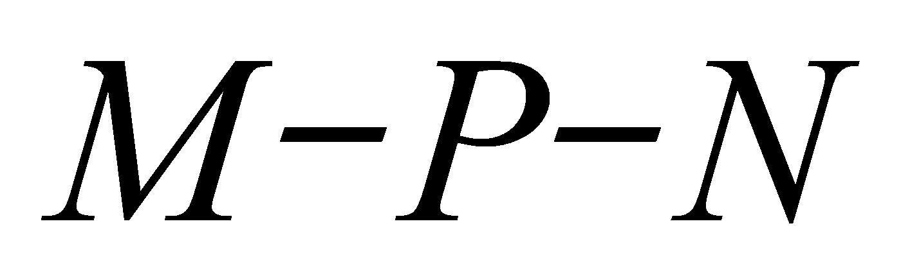
，若该折线上一点Q把这条折线分成相等的两部分，我们把这个点Q叫做这条折线的“折中点”．已知点D是折线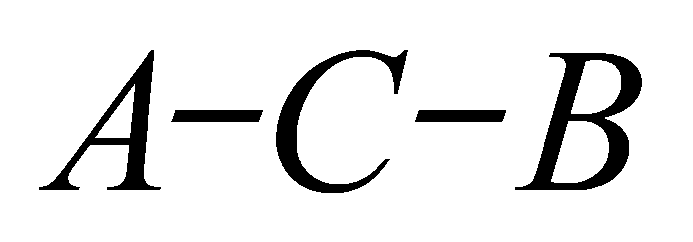
的“折中点”，点E为线段的中点， ，
， ，则线段
，则线段 的长为 ．
的长为 ．5．（23-24七年级上·湖北随州·期末）如图，线段的长为 ，点为线段的中点，为线段上一点，且
，点为线段的中点，为线段上一点，且 ．图中共有 条线段；若为直线上一点，且
．图中共有 条线段；若为直线上一点，且 ，则
，则
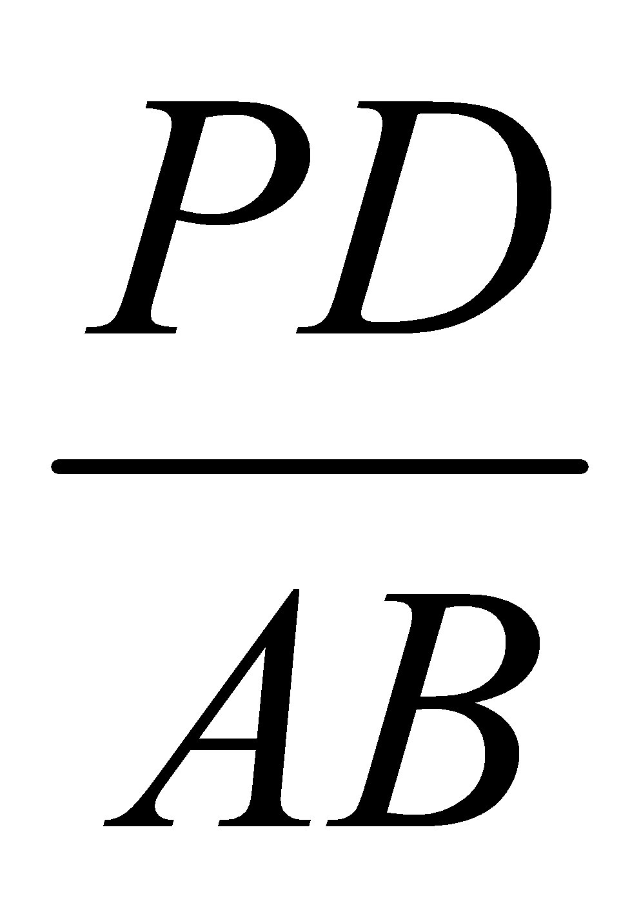
的值为 ．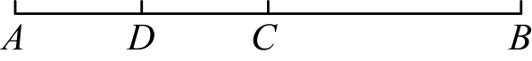
【考点二 分类讨论思想在角的计算中的应用】
例题：（22-23七年级上·河南南阳·期末）已知 ，
， ，
， 平分
平分 ，
， 平分
平分 ，则
，则 ．
．
【变式训练】
1．（22-23七年级上·湖南湘西·期末）已知 ，过O点作射线，，使得
，过O点作射线，，使得 ，是
，是 的平分线，则
的平分线，则 的度数为 ．
的度数为 ．
2．（23-24七年级上·四川绵阳·期末）已知
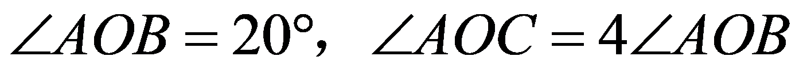
， 平分
平分 平分
平分 ，则
，则 的度数是 ．
的度数是 ．3．（22-23七年级上·海南三亚·期末）已知，在同一平面内过点O作射线
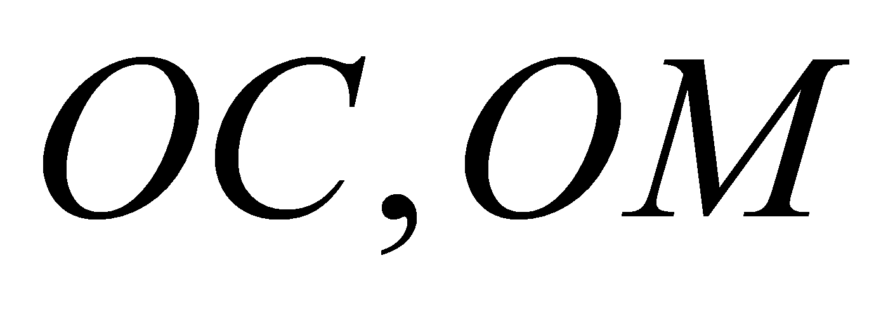
平分 ，平分
，平分 的度数为 ．
的度数为 ．4．（23-24七年级上·四川成都·期末）如图，点G为直线 上一点，
上一点，
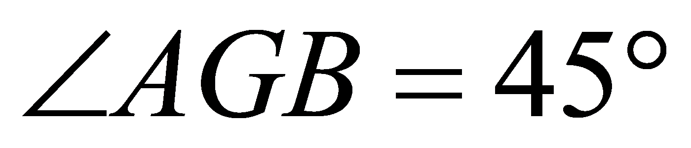
，将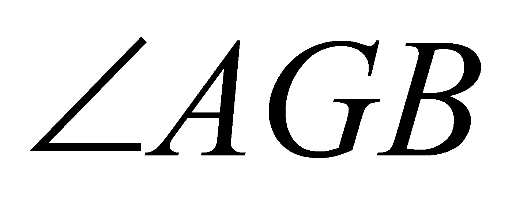
绕点G逆时针旋转，当射线 与射线
与射线 重合时停止旋转；在旋转过程中，射线
重合时停止旋转；在旋转过程中，射线 始终平分
始终平分 ；当
；当 ，三条射线中有一条是另外两条射线所成夹角的平分线时，
，三条射线中有一条是另外两条射线所成夹角的平分线时，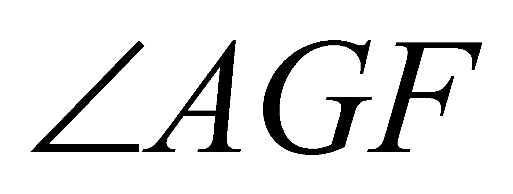
的度数为 ．5．（23-24六年级下·山东烟台·期中）如图，已知 是内部的一条射线，图中有三个角：，和，当其中一个角是另一个角的两倍时，称射线为的“巧分线”．如果
是内部的一条射线，图中有三个角：，和，当其中一个角是另一个角的两倍时，称射线为的“巧分线”．如果 ，是
，是 的“巧分线”，则
的“巧分线”，则 的度数为 ．
的度数为 ．
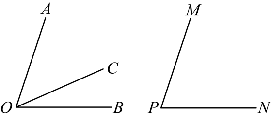
【考点三 整体思想及从特殊到一般的思想解决线段和差问题】
例题：（23-24七年级上·全国·单元测试）A，B 两点在数轴上的位置如图所示，其中点 A 对应的有理数为 ，且
，且 ．动点 P 从点 A 出发，以每秒2个单位长度的速度沿数轴正方向运动，设运动时间为t秒（t
．动点 P 从点 A 出发，以每秒2个单位长度的速度沿数轴正方向运动，设运动时间为t秒（t ）．
）．

(1)当 时，
时， 的长为 ，点 P 表示的有理数为 ；
的长为 ，点 P 表示的有理数为 ；
(2)当 时，求t的值；
时，求t的值；
(3)M为线段的中点，N 为线段 的中点．在点 P 运动的过程中，线段 的长度是否发生变化？若变化，请说明理由；若不变，求出线段的长．
的长度是否发生变化？若变化，请说明理由；若不变，求出线段的长．
【变式训练】
1．（23-24七年级上·辽宁铁岭·阶段练习）如图，已知点在线段上，点 分别是
分别是 的中点．
的中点．

(1)若 ，求线段的长；
，求线段的长；
(2)若点为线段上任一点，其它条件不变，你能猜想线段与的数量关系吗？并说明你的理由；
(3)若点在线段的延长线上，其它条件不变，你上述猜想的结论是否仍然成立？请画出图形，直接写出你的结论．
2．（22-23六年级下·山东泰安·期中）（1）已知线段 ，点
，点 线段的中点，点
线段的中点，点 是线段的中点，求：
是线段的中点，求：
①如图1，若点为线段上任意一点，求线段的长度；
②如图2，若点为线段延长线上任意一点，线段的长度会发生变化吗？请说明理由．
（2）如图3，若点为线段延长线上一点，点线段的中点，点是线段上的一点，且 ．求：
．求：
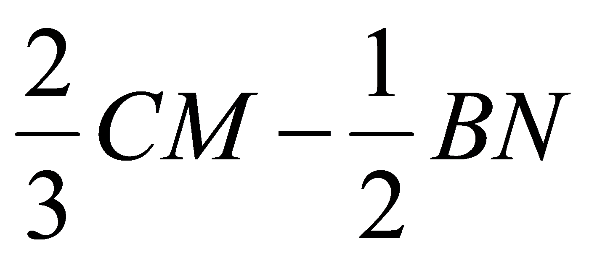
的值．3．（23-24七年级下·黑龙江大庆·开学考试）如图（1），已知点C在线段上，且
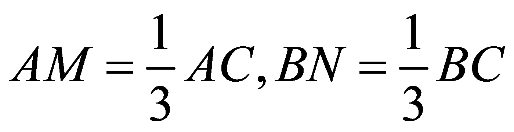
．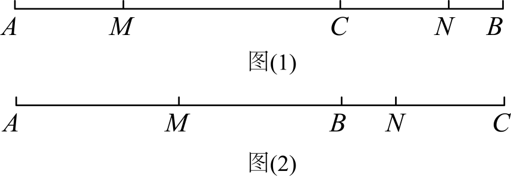
(1)若 ，求线段的长；
，求线段的长；
(2)若点C为线段上任意一点，其他条件不变，且满足 ，求线段 的长；
，求线段 的长；
(3)如图（2），若点C为线段延长线上任意一点，其他条件不变，且满足
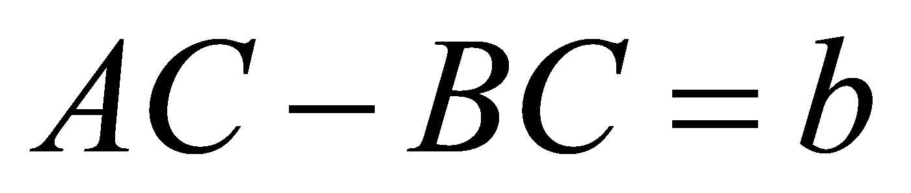
，求线段的长．4．（23-24七年级上·江苏盐城·阶段练习）【感悟体验】如图 ，三点在同一直线上，点在线段的延长线上，且
，三点在同一直线上，点在线段的延长线上，且 ，请仅用一把圆规在图中确定点的位置．
，请仅用一把圆规在图中确定点的位置．
【认识概念】在同一直线上依次有 四点，且，那么称与互为“对称线段”，其中为的“对称线段”，亦为的“对称线段”．
四点，且，那么称与互为“对称线段”，其中为的“对称线段”，亦为的“对称线段”．
如图 ，下列情形中与互为“对称线段”的是 （直接填序号）．
，下列情形中与互为“对称线段”的是 （直接填序号）．
 ；
；
 ；
； ．
．
【运用概念】如图 ，与互为“对称线段”，点为的中点，点为的中点，且
，与互为“对称线段”，点为的中点，点为的中点，且 ．
．
（1）若 ，求
，求 的长；
的长；
（2）若 ，求的长；
，求的长；
【拓展提升】如图 ，在同一直线上依次有四点，
，在同一直线上依次有四点， 且
且 （为常数），点为的中点，点在上且
（为常数），点为的中点，点在上且 ．是否存在
．是否存在 的值使得的长为定值？若存在，请求出的值以及这个定值（用含的代数式表示）；若不存在，请说明理由．
的值使得的长为定值？若存在，请求出的值以及这个定值（用含的代数式表示）；若不存在，请说明理由．
【考点四 整体思想及从特殊到一般的思想解决角和差问题】
例题：（24-25七年级上·黑龙江哈尔滨·阶段练习）【问题驱动】已知O是直线上的一点， ，
， 平分．
平分．
（1）如图1，若 ，求
，求 的度数；
的度数；
（2）如图1，若 ，则的度数为______（用含有
，则的度数为______（用含有 的式子表示）不必说明理由；
的式子表示）不必说明理由；
【拓广探索】
（3）将图1中的 绕顶点O顺时针旋转至图2的位置，试探究和度数之间的关系，写出你的结论，并说明理由．
绕顶点O顺时针旋转至图2的位置，试探究和度数之间的关系，写出你的结论，并说明理由．
（4）将图1中的绕顶点O逆时针旋转至图3的位置，其它条件不变，若，则的度数为______（用含有的式子表示），不必说明理由．
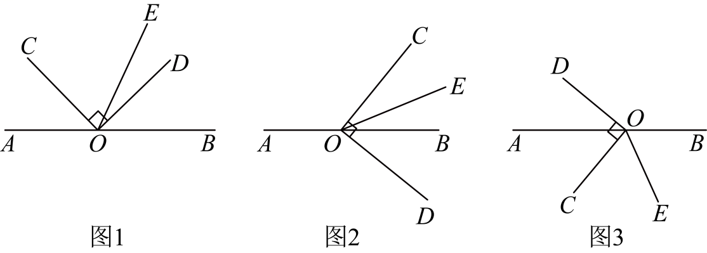
【变式训练】
1．（23-24七年级下·河北石家庄·开学考试）如图所示，已知
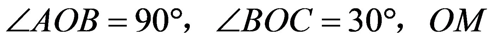
平分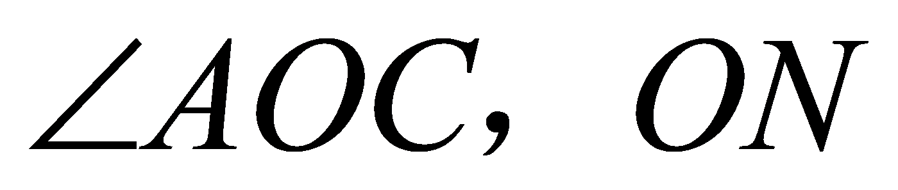
平分．
(1)如图， ___________；
(2)将绕O点向下旋转，使
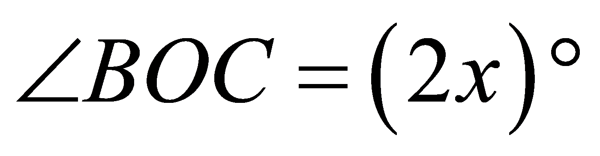
，其他条件不变，能否求出 的度数？若能，求出其值，若不能，请说明理由；
的度数？若能，求出其值，若不能，请说明理由；(3)若
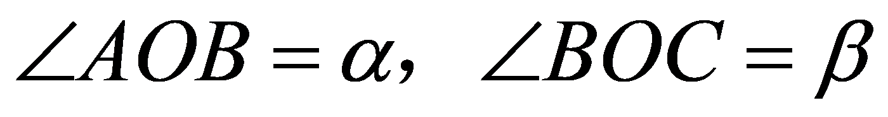
，仍然分别作 的平分线，，能否求出的度数？若能，求的度数；若不能，试说明理由．
的平分线，，能否求出的度数？若能，求的度数；若不能，试说明理由．2．（22-23七年级上·辽宁鞍山·期末）如图，已知 ，
， ，平分，平分．
，平分，平分．
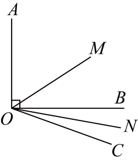
(1)求的度数．
(2)若将题干中的改为 ，其余条件不变，求的度数；
，其余条件不变，求的度数；
(3)若将题干中的改为 （β为锐角），其余条件不变，求的度数．
（β为锐角），其余条件不变，求的度数．
(4)从前面的结果中，你能得出什么结论？
3．（23-24七年级上·贵州六盘水·期末）如图①所示，，将直角三角板的直角顶点放置在O点，平分 ．
．
(1)若 ，则
，则 ______，
______， ______．
______．
(2)如果 ，
， ，试判断，
，试判断，
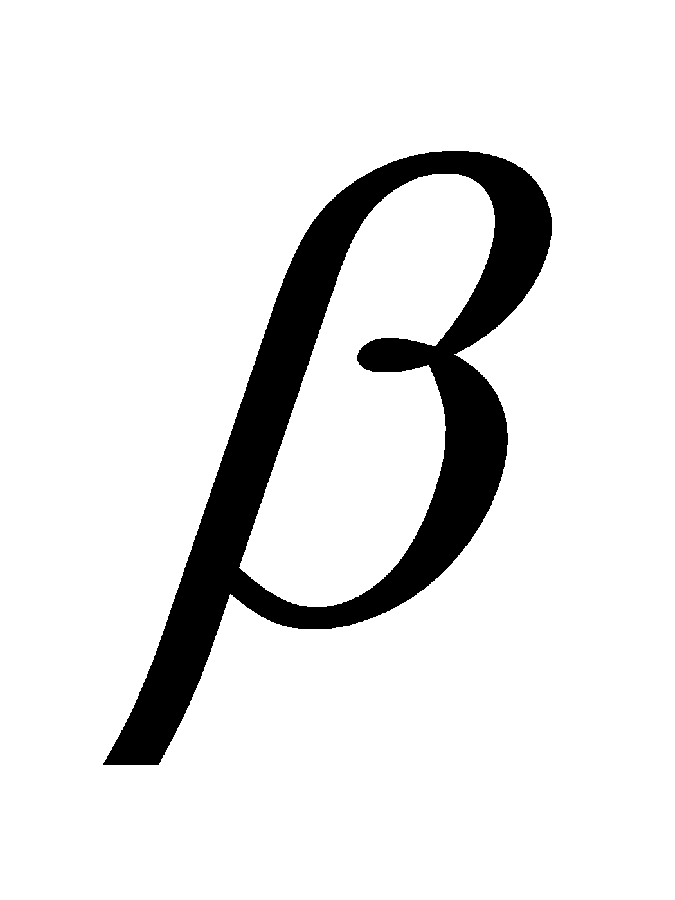
的数量关系，并说明理由．(3)如图②当直角三角板绕着O点顺时针旋转一定角度，使得在的内部，在的外部，若，，，是否还存在（2）中的数量关系，若存在，请说明理由，若不存在，请求出，的数量关系．
4．（23-24七年级上·河南郑州·期末）综合与探究
【问题情境】
将一副三角尺按如图1所示位置摆放，三角尺 中，
中，
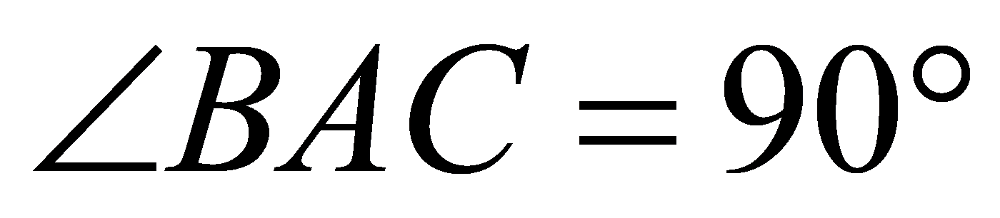
， ；三角尺
；三角尺 中，
中，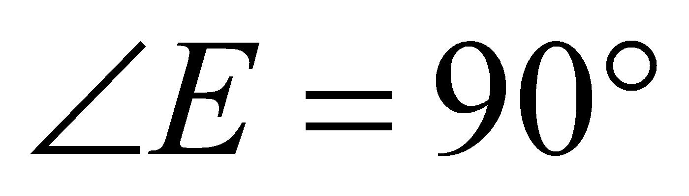
，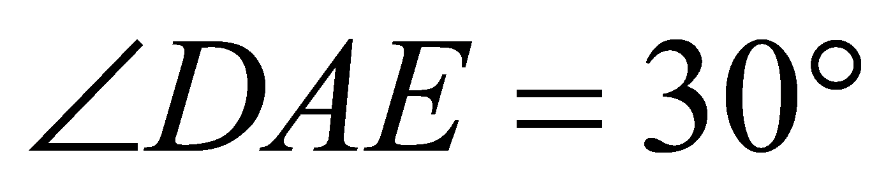
， ．分别作
．分别作 的角平分线
的角平分线 ．
．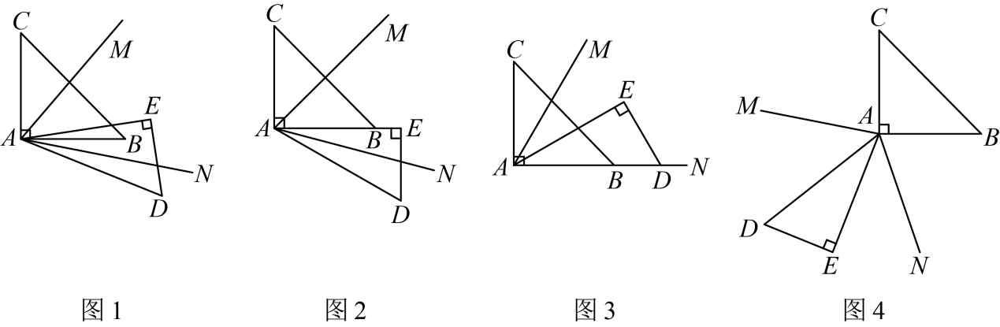
【初步探究】
现将三角尺按照图2，图3所示的方式摆放，仍然是的角平分线．在图2中与 重合，在图3中
重合，在图3中 与
与
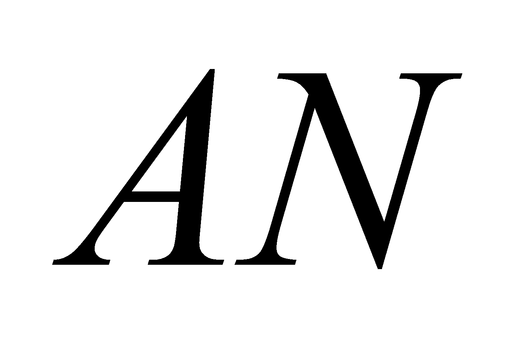
重合在一起．（1）计算：图2中 的度数为___________°，图3中的度数为___________°（直接写出答案）．
的度数为___________°，图3中的度数为___________°（直接写出答案）．
【深入探究】
（2）通过初步探究，请你猜想图1中的度数为___________°．
如果设 ，请求出图1中的度数．
，请求出图1中的度数．
【类比拓展】
（3）再将三角尺按照图4所示的方式摆放，仍然是的平分线．请你求出的度数．